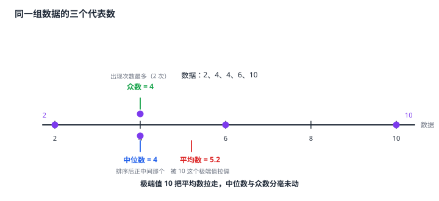

数据的集中趋势（平均数·中位数·众数）
一组数据往往有好几十个值，谁也不能代表全体，于是要挑一个「代表数」。初中只认三个：平均数是所有数据之和除以数据个数，最常用也最容易被极端值带偏；中位数是把数据排序后取中间位置的那个（数据个数为偶数时取中间两个的平均），它只关心位置、不关心数值，因此天生抗极端值；众数是出现次数最多的那个数，可以有一个、几个，也可以一个都没有。三者回答的不是同一个问题：平均数回答「总量如何分摊」，中位数回答「排在中间的是多少」，众数回答「最常出现的是什么」。选哪一个，取决于数据的分布形态和问题的问法。
| 所属主题 | 统计 |
|---|---|
| 所属模块 | 统计与概率 |
| 课标学段 | 第四学段（7~9 年级） |
| 前置知识 | 数据的收集、统计图表 |
| 核心素养 | 数据观念抽象能力应用意识 |
教材定位
人民教育出版社《人教版（2024版）义务教育教科书·数学》
八年级下册第24章 数据的分析24.1 数据的集中趋势
对应八下 24.1 数据的集中趋势：平均数、中位数、众数与加权平均数。
说明
平均数：把所有数据相加再除以数据个数，\barx=\dfracx_1+x_2+\cdots+x_nn。它是初中最常用的代表数，因为它把「总量」和「个数」两个信息合成一个数，且与原数据同单位、便于比较。它的软肋是每个数据都参与计算，所以一个特别大或特别小的值会明显拉动结果——这一点必须和下一个对照着记。
中位数：把数据从小到大排好序，取中间位置的那个数。数据个数为奇数时，取正中间那个；为偶数时，取中间两个数的平均数。中位数只关心数据的位置，不看数值本身，所以哪怕数据里混进一个极端值，只要它不改变排序，中位数就纹丝不动。「中位数」这个名字里的「中」，说的正是这个位置居中。
众数：一组数据中出现次数最多的那个数。它回答的是「最常出现的情况是什么」。三个特点要记牢：众数可以不止一个（两个数出现次数一样多，两个都是众数）；众数也可能不存在（每个数只出现一次，就没有众数）；众数不一定在数据排序的中间（它取决于哪个值出现得最多，与位置无关）。
三者对比着看最清楚。设数据是 2、4、4、6、10：平均数 =2+4+4+6+10/5=26/5=5.2；排序后正中间是 4，中位数 =4；出现两次的 4 是众数，众数 =4。极端值 10 把平均数从 4 拉到了 5.2，而中位数与众数分毫未动。
加权平均数：当各组数据的个数不同时，平均数不能直接把所有数加起来除以总个数，而要按各组的个数加权——这正是「各组平均数 × 该组个数」再除以总个数。例如平时成绩占 30%、期中占 30%、期末占 40%，总评 =85×0.3+90×0.3+78×0.4。写成公式是 \dfracx_1n_1+x_2n_2+\cdots+x_kn_kn_1+n_2+\cdots+n_k，其中 n_i 是第 i 组的个数（权重）。
使用场景
招聘与薪酬：招聘广告常写「平均月薪 8000 元」，但若少数高管把平均数拉得很高，实际情况就靠中位数才能反映——看职位空缺时更该看中位数。
商品定价与选品：某尺码鞋卖得最多，说明这个尺码是众数，选品与备货按众数安排更稳妥；而销量受促销影响大时，用中位数代表「典型销量」更稳。
注意点
算中位数前必须先排序。直接拿「中间那个」而不排序，是这类题最常见的失分点——数据的原始顺序不代表大小顺序。
数据个数为偶数时，中位数是中间两个数的平均数，不是中间两个数中的任何一个。4 和 6 的中位数是 5，不是 4 也不是 6。
加权平均数不能直接把所有数加起来除以个数。各组个数不同时必须按个数加权——这正是「平均数」在分组数据里的推广形式，也是综合评价类题目（如平时、期中、期末总评）的标准算法。
众数可能不存在。数据 3、5、7 中每个数只出现一次，此时没有众数，题目若问「众数是多少」应回答「不存在」。
证明

图 1：同一组数据 2、4、4、6、10 的三个代表数——众数与中位数不受极端值影响，平均数被它拉走了
证明
结论 1平均数会被极端值带偏，而中位数与众数不受影响：2、4、4、6、10 中把 10 换成 100，平均数从 5.2 变成 25.2，中位数与众数纹丝不动。
平均数是数据的重心——把所有数据看作放在数轴上的砝码，这个砝码组的平衡点就是平均数。在 2、4、4、6、10 这组数据里，若把 10 换成 100，重心会明显右移，平均数从 5.2 变成 25.2。而中位数只数「第几个」，众数只数「谁出现得最多」，两者的计算过程里根本没有 10 这个数的数值参与，所以它们纹丝不动——这三个代表数分别提取了数据的三种不同信息：总量、位置、频数。
关键一步差别在计算时用到了数据的哪一部分：平均数把每个数据的数值都送进求和，单个数值改得越大、总和被拽得越远，重心必然右移；中位数只用到数据在数轴上的位置，众数只用到各数出现的频数，10 换成 100 既不改变排序也不改变次数，两者自然纹丝不动。这三个代表数分别提取了数据的三种不同信息：总量、位置、频数。
结论 2中位数是顺序统计量，平均数是数值统计量——这一条差别决定了中位数能抗极端值而平均数不能。
中位数是顺序统计量，它的计算只依赖数据之间的大小关系，不依赖具体数值。把任何一个数据改成更大的数，只要不与别的数据交换位置，中位数就不变。而平均数是数值统计量，每个数据都按数值大小直接进入求和。这两种数学性质的不同，决定了它们在数据中的表现不同。
关键一步这一条用的是「中位数是顺序统计量、平均数是数值统计量」这一对分类：中位数的计算只依赖数据之间的大小关系，把任何一个数据改成更大的数、只要不与别的数据交换位置，中位数就不变；平均数里每个数据都按数值大小直接进入求和，数值一动结果就动。两种数学性质不同，表现就不同。
结论 3回答「最常见的情况是什么」这类问题时众数比平均数更贴近「多数人的情况」，但众数不适合描述连续变化的量。
如果问的是「最常见的情况是什么」，答案在频数里而不在数值里。比如鞋码调查中销量最大的那个尺码就是众数，它比平均数更能说明「多数人穿多大」。但众数不适合描述连续变化的量（比如身高），因为连续量的数据几乎不会重复出现，众数往往不存在。
关键一步依据是题目问的是哪一种信息：「最常见的情况是什么」的答案在频数里而不在数值里，比如鞋码调查中销量最大的那个尺码就是众数，它比平均数更能说明「多数人穿多大」。反过来，连续变化的量（比如身高）的数据几乎不会重复出现，没有哪个值的频数突出，众数往往不存在，这类量本就不该用众数来描述。
结论 4分组数据的平均数必须加权：它是各组平均数按人数加权后的结果，而不是各组平均数的简单平均。
把总体拆成几组后，「全体的平均数」并不是「各组平均数的平均」，而是各组平均数按人数加权后的结果——人数多的那一组对全体的影响本来就大。举例：甲班 40 人平均 85 分，乙班 10 人平均 60 分，全年级平均不是 (85+60)÷ 2=72.5，而是 85×40+60×10/50=4000/50=80（分）。前者把两个班当成同样大，错了。
关键一步加权的依据是「全体的总量由各组按人数摊出来」：把全体看成由各组按人数拼成的一团，总体平均数就是把各组的「人数 × 平均数」加起来再除以总人数，等价于让各组平均数按人数占比说话。人数多的那一组对全体的影响本来就大，所以不能把各组平均数简单平均。
动手实验
请五位同学各报一次自己的身高，记下这五个数，算出平均数。然后请其中最高的同学报一个偏高（或偏高很多）的数，再算一次平均数，看它变化多少；同一组数据的中位数却几乎不动（只要排序后中间位置没换人）。接着把五个数里最高的那个换成明显偏小的数（比如少写了一位），再看平均数、中位数、众数各怎么变。最后再试试众数：五个数各报一次往往每个数都只出现一次，此时众数不存在——这就是「众数不一定有」的亲身体验。
解题思路
求三个代表数的顺序：① 排序（求中位数必需，求平均数与众数时也要，否则容易看漏哪个出现得多）；② 平均数 = 总和 ÷ 个数；③ 中位数 = 奇数个取正中间、偶数个取中间两个的平均；④ 众数 = 出现次数最多的数（可能多个、可能没有）。
分组数据求平均数：先求各组的平均数，再按各组个数加权——\dfrac\sum x_in_i\sum n_i。权重就是各组个数，题目里常以「占百分之几」给出，百分数直接当权重用即可。
比较两类数据选代表数：问「总量水平」用平均数；问「中间的典型水平」或数据偏斜严重用中位数；问「最常出现的」用众数；需要进一步看稳定性（波动大小）时，要用到下一节的方差。
按场景的例题
例 1（场景：数据调查） 一组日常数据的三个代表数
某班 8 名同学一周内每天做家务的时间（单位：分钟）分别是 5、3、7、3、6、8、3、9。求这组数据的平均数、中位数与众数。
解：先排序：3、3、3、5、6、7、8、9。平均数 =5+3+7+3+6+8+3+9/8=44/8=5.5（分钟）。中位数：数据个数 8 为偶数，取中间两个数 5 与 6 的平均数，5+6/2=5.5（分钟）。众数：3 出现了 3 次，出现次数最多，众数 =3（分钟）。
答：平均数 5.5 分钟，中位数 5.5 分钟，众数 3 分钟。
例 2（场景：生活优化） 极端值对平均数与中位数的不同影响
某社区 5 户家庭的月用水量（单位：吨）分别为 12、15、18、20、25。后来有一户搬入，该户月用水量为 60 吨。求加入这户之前与之后的平均数和中位数，并说明哪个统计量更能反映一般家庭的用水水平。
解：加入前：平均数 =12+15+18+20+25/5=90/5=18（吨）；排序 12、15、18、20、25 为奇数个，中位数 =18（吨）。加入后：数据变为 6 个，总和 90+60=150，平均数 =150/6=25（吨）；排序 12、15、18、20、25、60，偶数个取中间两个 18 与 20 的平均，中位数 =18+20/2=19（吨）。对比可见：新搬入的一户用水量特别大，把平均数从 18 拉到 25（涨了 7），中位数却只从 18 变到 19（涨了 1）。所以中位数更能反映一般家庭的用水水平，平均数受这一户的影响过大。
答：加入前平均数 18、中位数 18；加入后平均数 25、中位数 19；中位数更能反映一般水平。
例 3（场景：销售与利润） 学期总评成绩的加权计算
某学生的学期总评成绩由三部分组成：平时成绩占 30%、期中成绩占 30%、期末成绩占 40%。他这三次的成绩分别是平时 85 分、期中 90 分、期末 78 分。求他的学期总评成绩。
解：这是加权平均数：各部分权重不同，不能把三个分数相加除以 3。总评 =85×30%+90×30%+78×40%=25.5+27+31.2=83.7（分）。验算权重之和：30%+30%+40%=100% ✓，总评在三个原始分数之间（78 到 90 之间），合理。注意若错算成 85+90+78/3=84.33，看起来只差 0.6 分，但方法本身是错的——期末占四成，不能只当三分之一。
答：学期总评成绩为 83.7 分。
常用推论
平均数、中位数、众数其实是三种统计量，各自对应数据的一个侧面：平均数用全部数值、中位数用全部次序、众数只用频数。数据一旦「不规矩」（有极端值、有重复堆积、或者干脆是连续量），三者的结论就可能大相径庭——所以任何一个统计量单独拿出来都会骗人，报告数据时要说明用的是哪一个。
「中位数抗极端值」这个性质在现实里有直接用处：招聘薪酬、房价、收入这些高度偏斜的量，用平均数汇报会失真，用中位数才接近多数人的真实处境；反过来，要衡量总工作量（比如全班的家务总时间、全市的用电总量）就必须用平均数，因为总量信息只有它保留。
加权平均数是「用结构解释数值」的通用工具：成绩总评、绩效评估、课程综合评价都是同一个式子。它的真正价值在于让权重本身成为可讨论的对象——期末为什么占 40% 而不是 30%，这才是这类题背后的实质问题。
易错点
错数据 3、5、7 的中位数是 5（直接取写出来的中间那个），众数是 3（出现次数最多的那个）。
为什么错两处都错了。中位数是排序后的位置量，这组数据本来就是升序，中位数确实是 5，但理由必须是「排序后居中」而不是「写在中间」；而众数是出现次数最多的数，这三个数各出现一次，谁都不是众数，所以众数不存在。
正确中位数 =5（理由：排序后正中间）；众数不存在（每个数只出现一次）。
错平时 85 分（占 30%）、期中 90 分（占 30%）、期末 78 分（占 40%），总评 =85+90+78/3=84.33 分。
为什么错把三个不同权重部分当成了同等分量来平均。加权平均数必须按权重算：各项平均数乘以该项的个数（或占比）后再除以总个数。
正确总评 =85×0.3+90×0.3+78×0.4=83.7（分）。
错一组数据的中位数是 12，平均数是 10，所以这组数据的众数一定小于 10。
为什么错众数与平均数、中位数之间没有这种大小必然关系。众数只由「谁出现得最多」决定，可能比平均数大，也可能比平均数小，甚至可能不存在。中位数大于平均数只说明数据分布偏向大值一侧（比如有一个很大的数把平均数拉高了），推不出众数的位置。
正确三个统计量各由不同的信息决定（数值、位置、频数），它们之间的大小关系没有固定规律，要分别从数据本身判断。
直观理解
给一群数据找代表，就像给一队人找一个「中等身高的人」：平均数是让全队人站上天平求平衡的那个支点；中位数是按高矮排队后站在正中间的那个人；众数是最多人都挤在那个高度上的人。三种取法各有偏向——天平会被一头沉的砝码拽歪，排队看中间最公平，人最多的那个高度最真实。数据越「不规矩」（极端值多、重复多），三种取法的差距就越大，选哪个也就越要紧（图 1）。